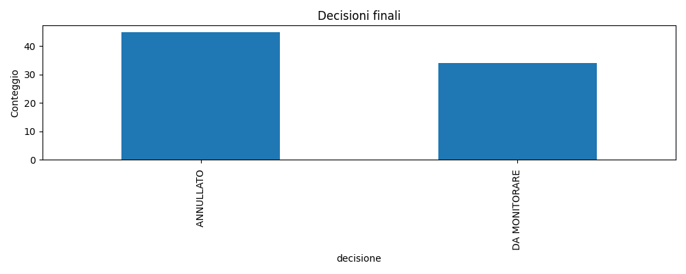
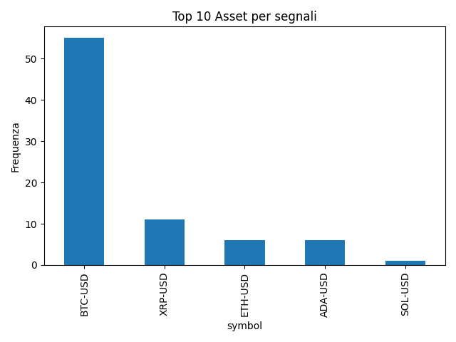
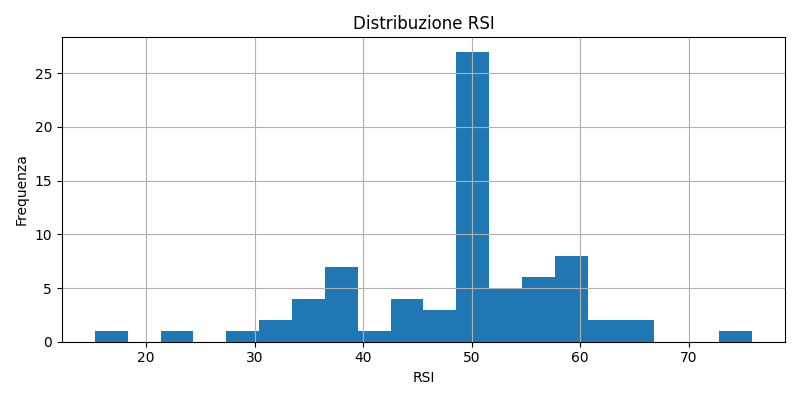
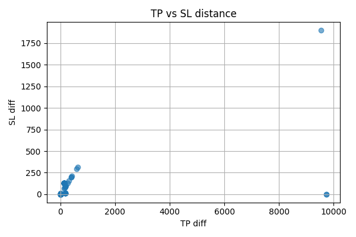

📊 Report Analisi Segnali
📝 Sintesi testo
📊 Segnali totali: 6
🪙 Tipi di segnali (BUY / SELL):
SELL: 4 (67.0%)
BUY: 2 (33.0%)
🎯 Stato decisionale:
DA MONITORARE ⚠️: 6 (100.0%)
📈 Asset più presenti:
symbol
BTC-USD 4
ETH-USD 1
XRP-USD 1
🕒 Ultimi 5 segnali:
timestamp symbol azione decisione
2025-03-24 12:44:07.442235 BTC-USD SELL DA MONITORARE ⚠️
2025-03-24 12:50:28.886778 BTC-USD SELL DA MONITORARE ⚠️
2025-03-24 12:51:56.151523 ETH-USD BUY DA MONITORARE ⚠️
2025-03-24 12:53:40.110129 XRP-USD BUY DA MONITORARE ⚠️
2025-03-24 13:15:16.428137 BTC-USD SELL DA MONITORARE ⚠️
📊 Esito operazioni:
🎯 Win rate BUY: 50.0% (TP: 1, SL: 1)
🎯 Win rate SELL: 50.0% (TP: 2, SL: 2)
TP: 3 (50.0%)
SL: 3 (50.0%)
📉 RSI medio: 50.39 (min: 43.78, max: 57.37)
RSI BUY: media 50.0, min 50.0, max 50.0
RSI SELL: media 50.58, min 43.78, max 57.37
📏 Distanza media TP: 88.18 | SL: 88.18
🎯 Decisioni finali

📈 Top 10 Asset per segnali

📉 Distribuzione RSI

📏 Distanza TP vs SL
